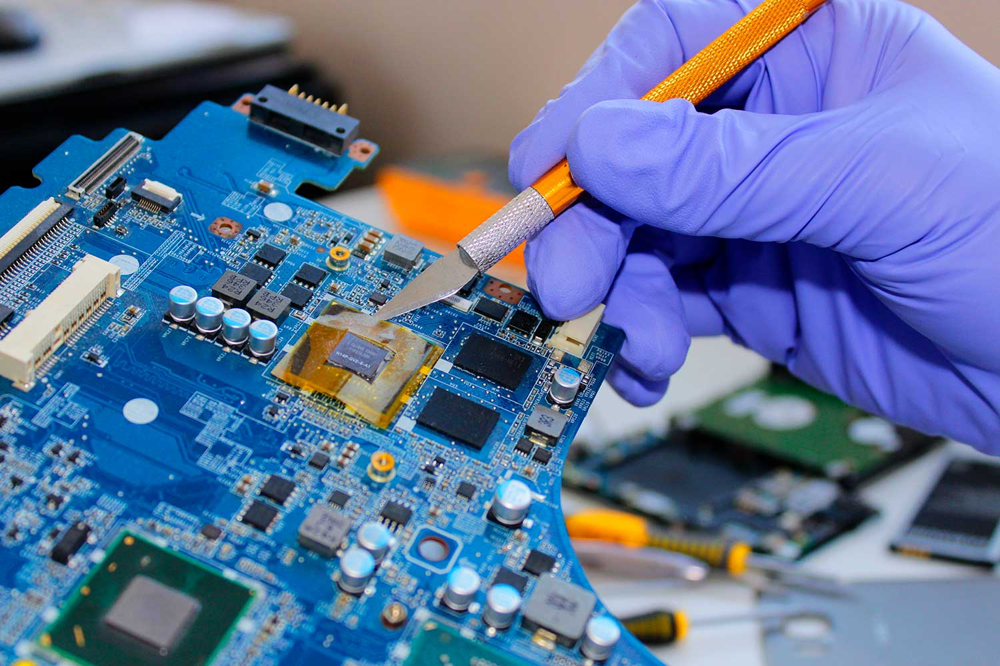
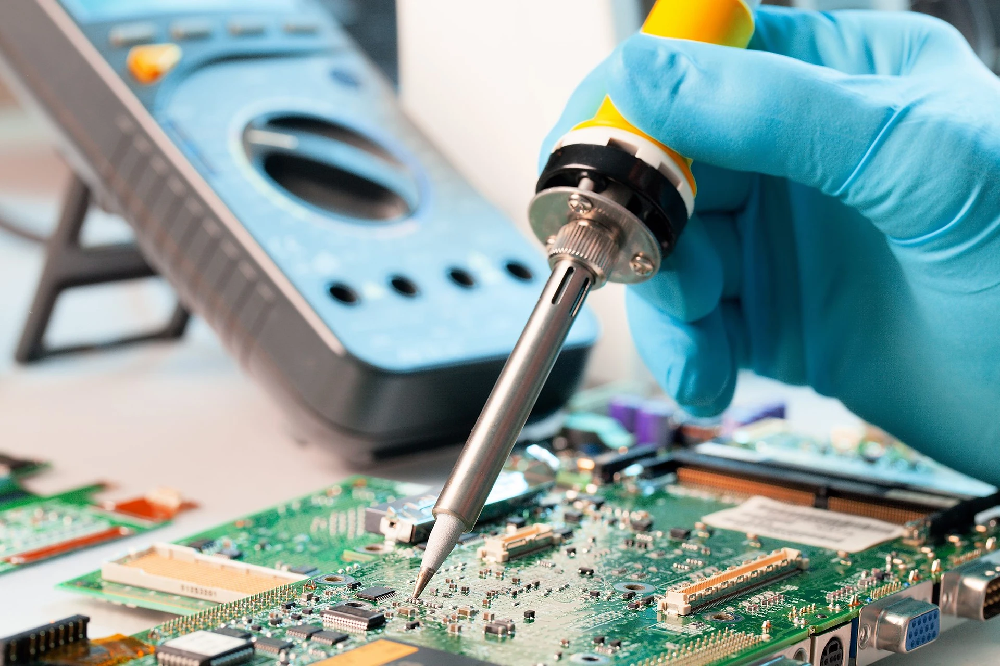
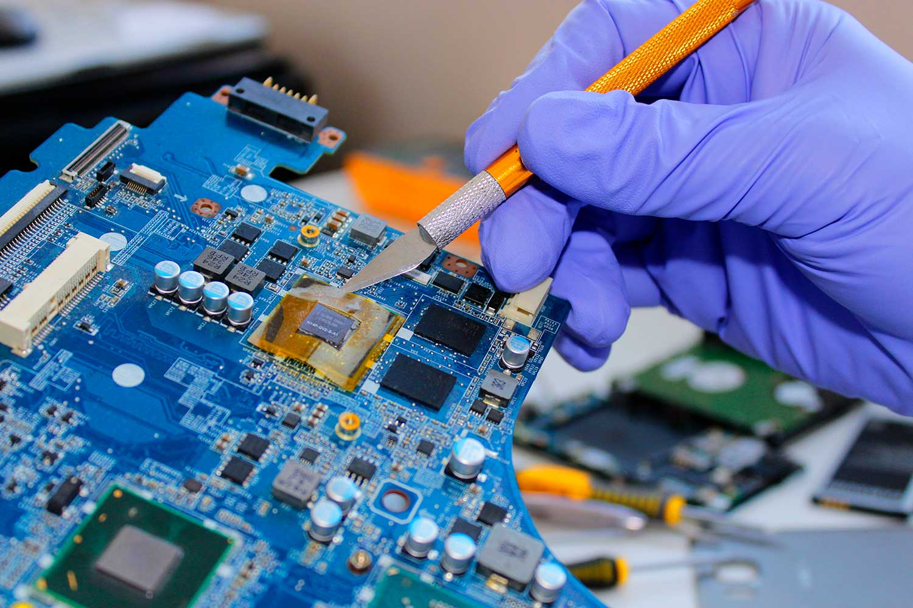
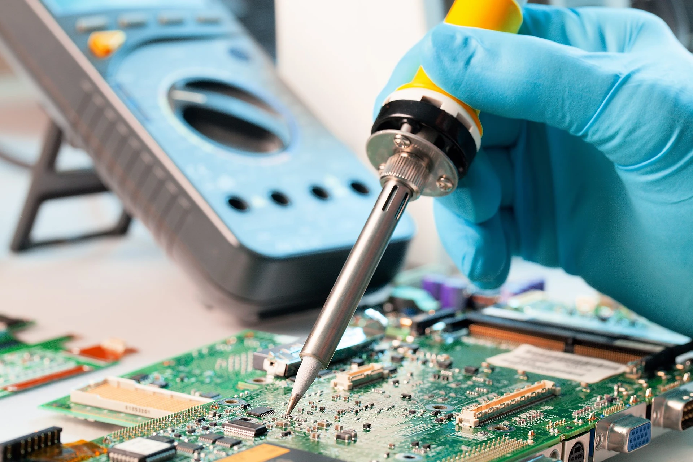

REGENESIS COMPUTER REPAIR
About Us
Welcome to Regenesis! Here at Regenesis, we believe in giving new life to your tech. Founded by a team of passionate tech enthusiasts, experienced technicians, and passionate engineers!
Our Vision
In a world where technology is constantly evolving, our vision is to reduce electronic waste and promote sustainability by breathing new life into your gadgets. Often times it's not always affordable to consistently replace such expensive machines and we don't always want to part ways with our devices! Gaming consoles, handhelds, PCs, all of them share similar sentiments to both us and you!
What We Do
From laptops, desktops, smartphones and tablets, our skilled technicians are equipped to handle a wide range of issues. Whether it’s a cracked screen, a stubborn virus, or performance slowdowns, we use the latest tools and techniques to diagnose and fix your devices efficiently and effectively.
Our Commitment
At Regenesis, we prioritize quality and customer satisfaction. We take the time to understand your needs and provide personalized solutions that fit your budget. Our transparent pricing and honest assessments mean you’ll never face unexpected surprises.
Why Choose Us?
- Expert Technicians: Our team brings years of experience in tech repair, ensuring reliable and high-quality service.
- Eco-Friendly Practices: We’re committed to reducing e-waste by restoring and recycling whenever possible.
- Customer-Centric Approach: Your satisfaction is our priority, and we strive to exceed your expectations with every repair.
Join Us on This Journey
Thank you for considering Regenesis for your computer repair and restoration needs. Together, let’s give your devices a second chance and contribute to a more sustainable future. Whether you’re a tech novice or a seasoned expert, we’re here to help you every step of the way. Let’s revive your tech today!